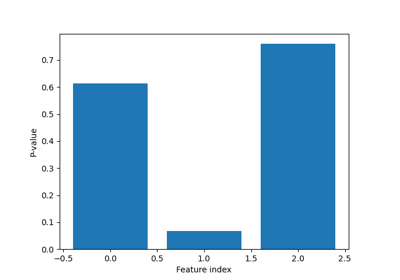
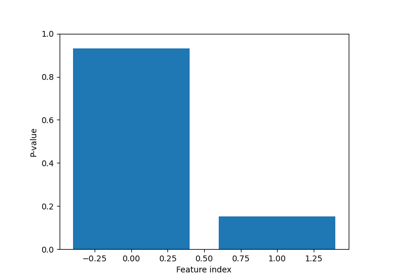
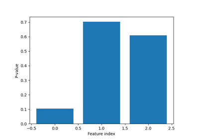

Examples gallery
This is a gallery of all the PSI example files.
Feature Selection

Selective inference for Lasso Feature Selection
Selective inference for Lasso Feature Selection

Selective inference for Sequential Feature Selection
Selective inference for Sequential Feature Selection

SI for Feature Selection after Optimal Transport-based Domain Adaptation
SI for Feature Selection after Optimal Transport-based Domain Adaptation
SI for Sequential Feature Selection after Optimal Transport-based Domain Adaptation
SI for Sequential Feature Selection after Optimal Transport-based Domain Adaptation